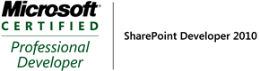
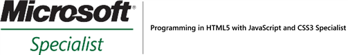

Other Certifications
My other, older and superseded professional certifications:
Microsoft Certified IT Professional (MCITP)
MCITP: SharePoint Administrator 2010
Exam code 70-668 (beta exam 71-668); passed June 2010.
Microsoft Certified Professional Developer (MCPD)
MCPD: Web Developer 4
Exam code 70-523; passed February 2013.
MCPD: ASP.NET Developer 3.5
Exam code 70-567; passed June 2010.
MCPD: SharePoint Developer 2010
Exam code 70-576 (beta exam 71-576); passed June 2010.

MCPD: Web Developer
Exam code 70-547; passed June 2009.
Microsoft Certified Solutions Associate (MCSA) certifications
MCSA: Windows Server 2012
Awarded January 2014.
Microsoft Certified Technology Specialist (MCTS) certifications
MCTS: .NET Framework 4, Web Applications
MCTS: .NET Framework 4, Service Communication Applications
MCTS: .NET Framework 4, Data Access
Exam code 70-523; passed February 2013.
MCTS: .NET Framework 3.5, ASP.NET Applications
Exam code 70-567; passed June 2010.
MCTS: SharePoint 2010, Configuring
MCTS: SharePoint 2010, Application Development
Exam codes 70-667 (beta exam 71-667) 70-573 (beta exam 71-573); passed June 2010.
MCTS: Windows SharePoint Services 3.0, Application Development
MCTS: Office SharePoint Server 2007, Application Development
Exam codes 70-541, 70-542; passed August 2009.
MCTS: .NET Framework 2.0, Web Applications
Exam codes 70-536, 70-528; passed May and June 2009.
MCTS: Windows Server 2003 Hosting, Configuration and Management
Exam code 70-501; passed March 2009.
MCTS: Windows SharePoint Services 3.0, Configuration
MCTS: Office SharePoint Server 2007, Configuration
Exam codes 70-630, 70-631; passed February 2009.
Microsoft Specialist certifications
Programming in HTML5 with JavaScript and CSS3
Exam code 70-480; passed December 2012.
